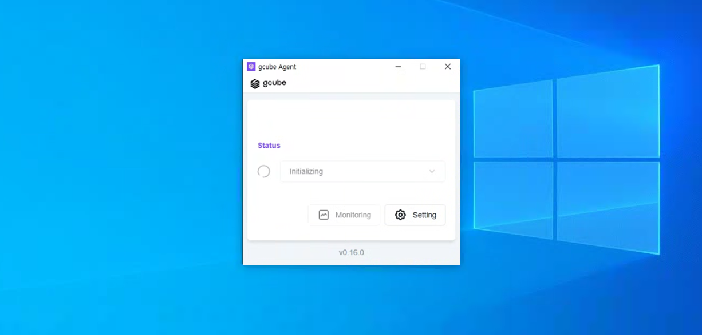
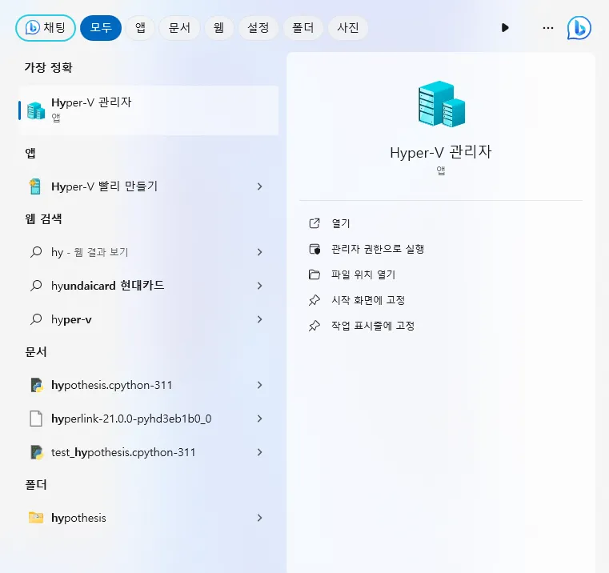
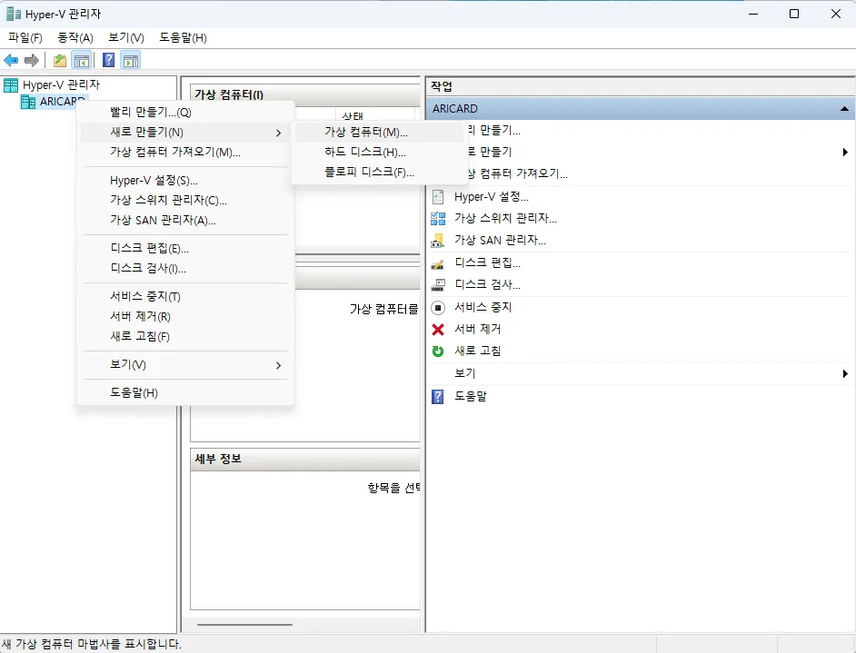
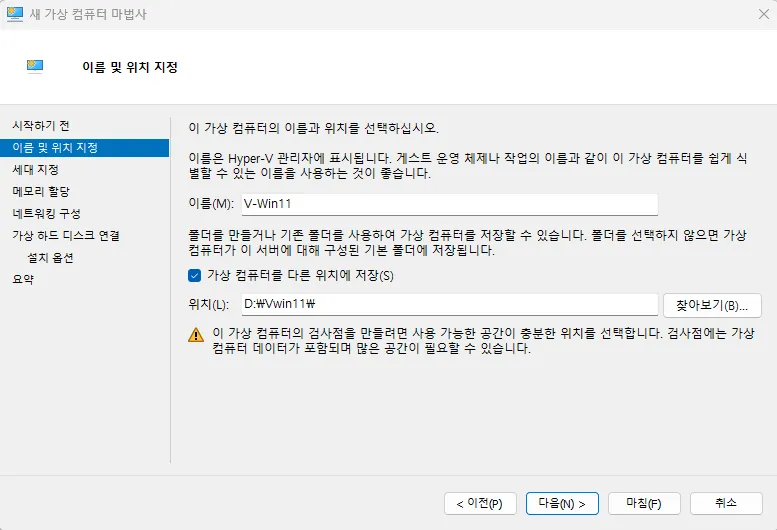
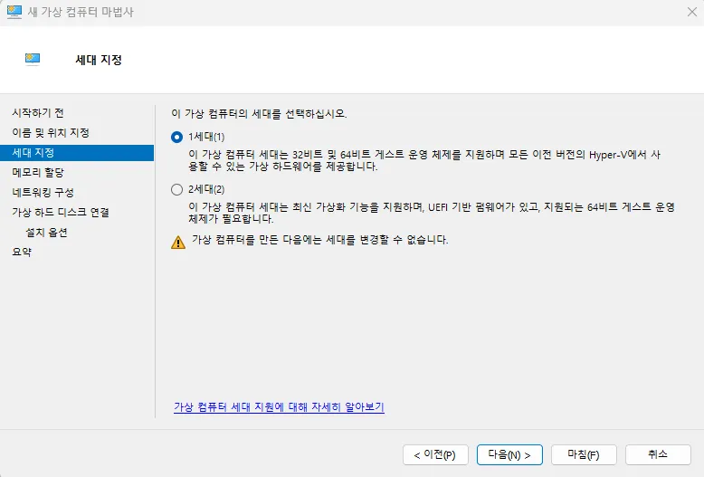
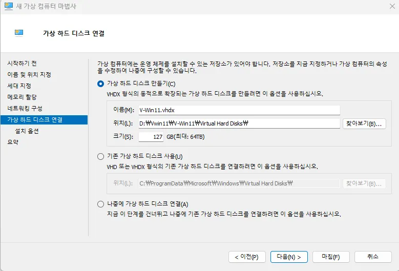
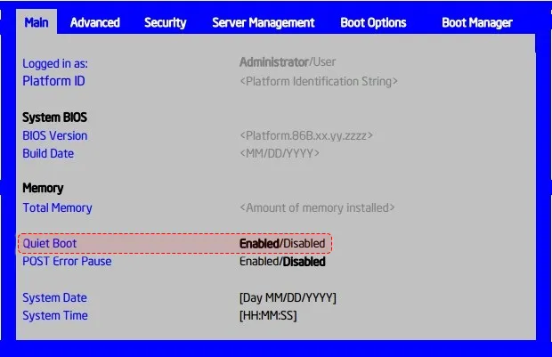
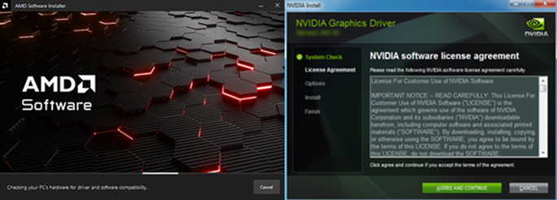

문제 해결 (Troubleshooting)
노드 운영 중 자주 발생하는 문제와 해결 방법을 안내합니다.
Tip
문제가 해결되지 않는 경우 gcube 고객지원(support@gcube.ai)으로 문의하세요.
에이전트 관련 오류
Initializing 오류 발생 시

Initializing 오류가 발생하는 경우 Hyper-V 활성화 여부를 확인합니다.
Hyper-V 활성화 방법
-
윈도우 검색 창에 "Windows 기능 켜기 / 끄기" 를 검색하여 실행합니다.

-
"Hyper-V" 를 찾아 체크합니다.

Warning
Hyper-V 기능은 기본적으로 Windows PRO 버전에서만 사용 가능합니다.
-
다시 시작 버튼을 눌러 재부팅을 진행합니다.

재부팅 완료 후 Hyper-V 설정
-
검색 창에서 "Hyper-V 관리자" 를 검색 후 실행합니다.

-
본인 컴퓨터 이름에서 마우스 우클릭 → "새로 만들기" → "가상 컴퓨터" 순으로 클릭합니다.

-
가상 머신의 이름과 저장 위치를 설정하고 다음을 클릭합니다.

Note
가상 윈도우는 용량이 크기 때문에 여유 공간이 충분한 드라이브를 지정하는 것이 좋습니다.
-
가상 컴퓨터 세대를 선택합니다.

세대 설명 1세대 32비트 및 64비트 Windows 설치 가능 2세대 64비트 Windows만 설치 가능 Warning
한 번 선택한 후에는 세대를 변경할 수 없습니다. 문제가 발생한 경우 가상 머신을 삭제하고 재생성하세요.
-
가상 컴퓨터에 할당할 메모리 용량을 설정합니다.
현재 컴퓨터의 RAM 용량과 가상 컴퓨터에서 작업하려는 업무를 고려하여 설정합니다. (1GB = 1024MB)
-
가상 하드 디스크의 위치와 크기를 입력합니다.
용량은 나중에 확장이 가능하니 설치된 하드 디스크 용량을 고려하여 설정합니다.
Failed to change VM state 오류 발생 시
Failed to change VM state (0x???????) 오류가 나타나는 경우
BIOS에서 가상화 설정을 활성화해야 합니다. 괄호 안 오류 코드와 함께 제조사에 문의하세요.
BIOS 설정
전원을 켜고 F2 키를 빠른 속도로 여러 번 눌러 BIOS에 진입합니다.
Note
SSD가 탑재된 제품의 경우 부팅 속도가 매우 빠르므로, 전원을 켜자마자 F2 키를 연타로 눌러주세요.
제조사별 BIOS 진입 방법
| 제조사 | BIOS 진입 단축키 | 부트 순위 선택 | 사이트 |
|---|---|---|---|
| 인텔 (Intel) | F2 | F10 | 링크 |
| AMD | F2 | F10 | 링크 |
| MSI | DEL | F11 | 링크 |
| 아수스 (ASUS) | F2 or Del | ESC or F8 or F12 | 링크 |
인텔(Intel) BIOS 설정 방법
- 부팅 중 로고 화면이 처음 표시되면 F2 키를 누릅니다.
-
기본 탭에서 자동 부팅 을 사용 안 함으로 변경합니다.

-
최상위 탭으로 돌아가 오른쪽 화살표 키를 눌러 저장 & 끝내기 탭으로 이동합니다.
-
변경 내용 저장을 선택하고 종료 하여 변경 사항이 저장된 상태로 부팅합니다.

NVIDIA 드라이버 인식 오류
증상
노드 공급 중 노드 상태가 '실패' 로 표기되는 오류가 발생할 수 있습니다.

원인
OS에서 그래픽 드라이버가 2개 이상 구동 중일 때 발생할 수 있습니다.
예: NVIDIA와 iGPU(AMD) 두 개의 그래픽 드라이버를 동시에 구동하는 경우

|gcube는 NVIDIA 그래픽 카드만 지원하므로, 이 경우 iGPU(AMD) 드라이버를 삭제해야 합니다.
해결 방법
- AMD 제조사 드라이버 삭제 유틸리티 (DDU) 를 사용해 iGPU 드라이버를 삭제합니다.
- gcube Agent를 재설치합니다.
그 외 해결 방법
- BIOS에서 iGPU 기능 중지
- 장치 관리자에서 iGPU 정보 확인 후 사용 중지 및 드라이버 삭제
NVIDIA 이외의 그래픽 드라이버 제거 및 Agent 재설치 후 노드를 실행하면 아래와 같이 정상 표기됩니다.

Warning
문제가 지속되면 gcube 고객지원(support@gcube.ai)으로 문의하세요.